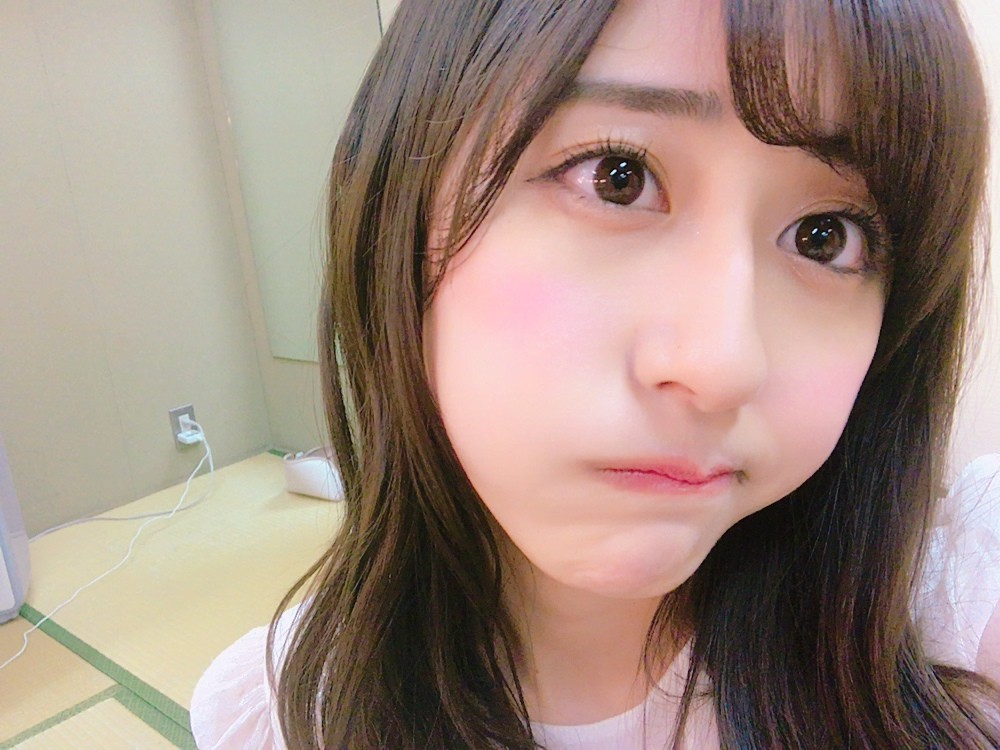
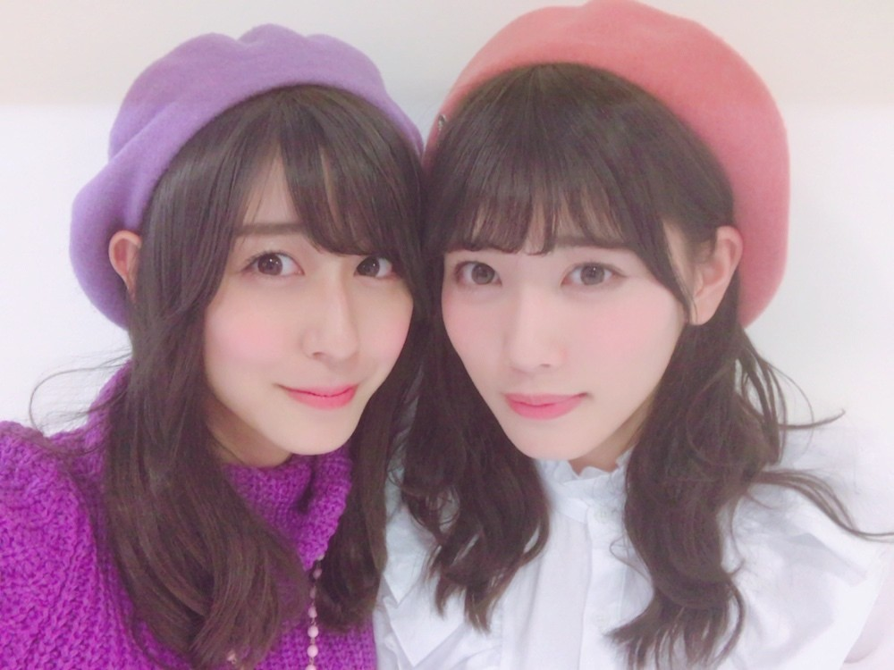
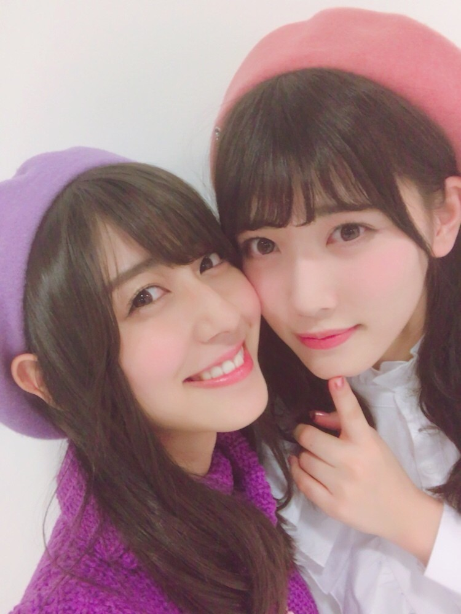

| 2017/02 13 Mon | 月曜日 |
ちはるーむへようこそ
今日が10代最後の月曜日！！
そう考えると「10代最後」って
名前がつく出来事が沢山あるね◎
貴重な毎日だな〜
そして今週は
10代と20代、２つの年齢を跨ぐ、
一生に一度の一週間です。
20歳に早くなりたいような、
まだまだ10代でいたいような、
難しい心境です

むむむ
ピーターパンのように
ずっと楽しく、ずっと子供でいたい！
とも思うけど
大人になるって大切な事だし
大人な女性に憧れるので
誕生日が待ち遠しい気持ちが勝ってるかな。
でもあと数日はまだ10代！

楽しい毎日が送れますように☺︎
----------------------------------------♡
純奈とは前世双子だったんじゃないかと
思うくらいに似てるところが多すぎる！

身長も雰囲気も顔立ちも包容力も
選ぶ服の好みも。

生写真撮影のときも大体
同じ服着てたり、
同じ様なスタイリングしてたり。
(愛未もよく同じになる)
純奈面白くていい子で優しいの。
一緒にいて楽しい！！
----------------------------------------♡
♬ ChihaMusic
「君の恋人になったら」back numberさん
これが表題でいいんじゃないかって
いうくらいに良い曲。
この情けなくて少し頼りない男の人が
好きな女の子に想いを馳せて
悶々とする曲が可愛くて大好き。
"君もいつかつられちゃって
私幸せだよって言われたいぜ"
この最後の歌詞が特にいい。
妄想ってところもいいし
言われたいぜ、って言い方もいい。
とにかく依与吏さんの歌が好き。
明日がバレンタインデーということで
妹が友チョコや義理チョコを
約70人分作ったみたいで
家の中がチョコの香りでいっぱい。
バレンタインって感じ...！！
小学生の頃の夢は
男の子になってバレンタインデーに
沢山チョコを貰うことだった。笑
モテモテになってチョコを貰いたかったな...
男の子だったら...
今日もChihAnswer募集します〜
10代最後の質問です！
好きなお菓子は？とかでも
なんでも良いので気軽に送ってください◎
おやすみ
斎藤ちはる
コメント(402)
2017/02/13 23:48